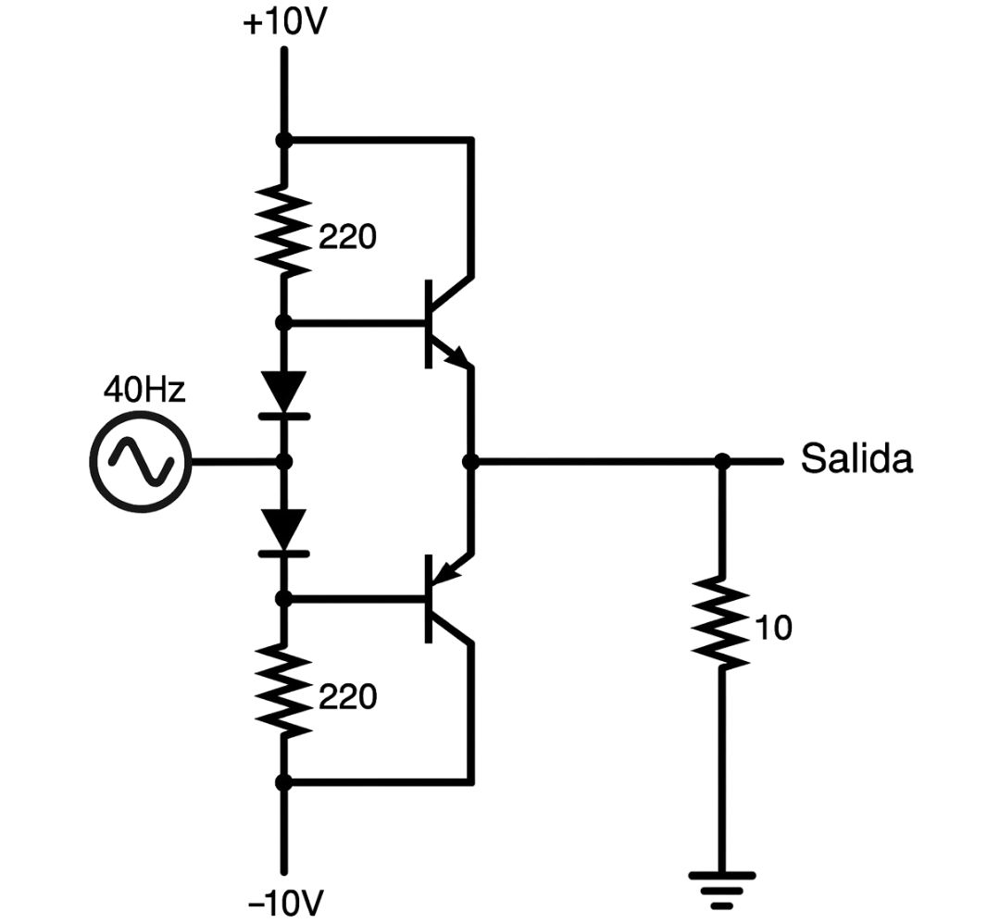

Un circuito seguidor de emisor push-pull (push-pull follower) es una etapa de salida usada en amplificadores de audio y fuentes de señal, cuyo propósito principal es entregar corriente de salida significativa a una carga, siguiendo el voltaje de entrada pero sin amplificarlo.

El objetivo del circuito push-pull es permitir que la carga reciba tanto corriente positiva como negativa, lo que lo hace adecuado para señales alternas (AC), como el audio. Además, mejora la eficiencia energética y permite obtener baja distorsión respecto a etapas de salida simples.
La función de los diodos es crear una "polarización" o separación de voltaje (aproximadamente 1.2 V para diodos de silicio) entre las bases de los transistores complementarios, de modo que ambos transistores estén listos para conducir en su respectivo semiciclo sin distorsión por "zona muerta" (crossover distortion). Esto mejora la linealidad y la fidelidad del circuito.
El push-pull follower entrega corriente alterna a la carga siguiendo la señal de entrada. Los transistores NPN y PNP conducen alternadamente para semiciclos positivos y negativos. Los diodos en las bases aseguran una transición suave y reducen distorsión.
¡Comparte si te resultó útil la explicación!